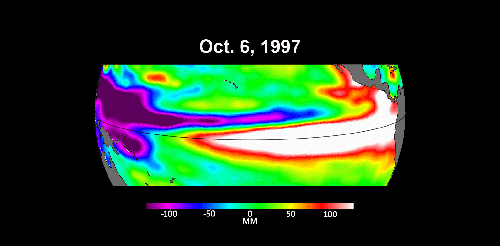
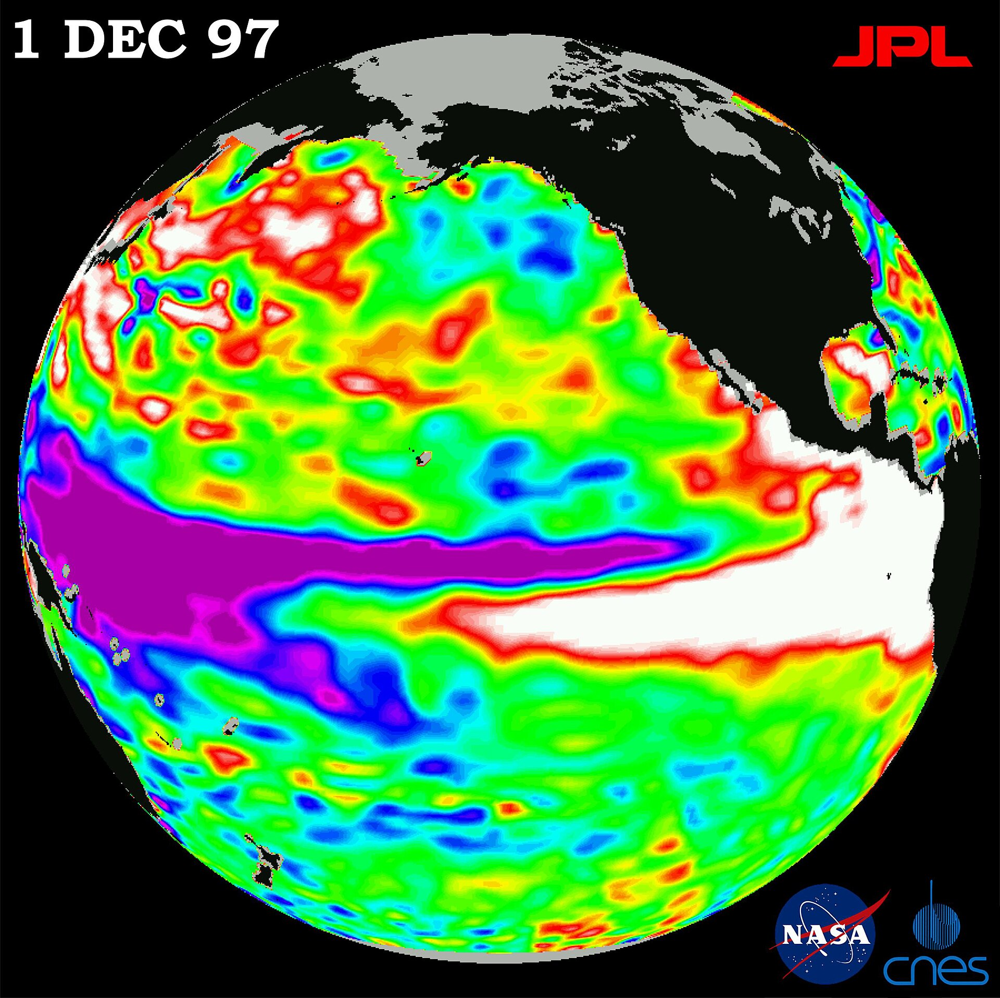
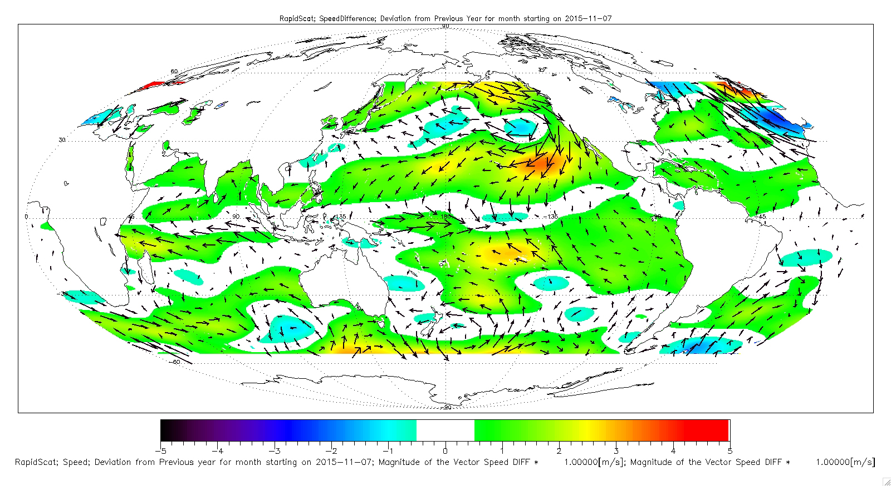
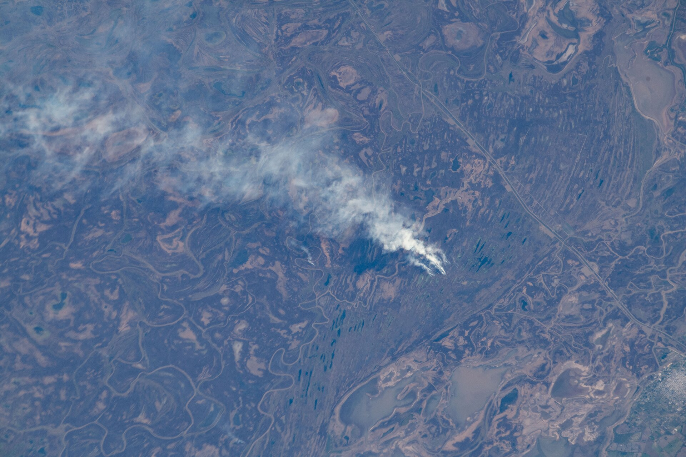

Argentina ENSO
Impact Tracker

¿Cómo evolucionó el ENSO?
ONI: media trimestral de anomalías del Niño 3.4, conservada aquí como referencia histórica. NOAA usa RONI para el monitoreo operativo desde febrero de 2026; el aviso oficial y RONI se muestran en el encabezado.

El componente atmosférico del ENSO
El SOI resume diferencias de presión entre Tahití y Darwin. Valores negativos sostenidos suelen acompañar El Niño; positivos, La Niña. Es un indicador complementario, no una alerta temprana calibrada por este tracker.

¿Qué se espera para los próximos meses?
Cada mes, múltiples modelos climáticos proyectan hacia dónde se moverá el ENSO. El gráfico muestra las chances asignadas a cada fase (El Niño, Neutral, La Niña) por trimestre. Fuente: IRI/CCSR, Columbia University.
¿Se parece a algún episodio anterior?
Trayectorias históricas de ONI en ventanas definidas alrededor de eventos destacados. Permiten comparar valores, no predecir que se repetirá un patrón. Las fechas son los meses centrales de las medias trimestrales.

¿Cuándo ocurrieron El Niño y La Niña?
Cada barra es un episodio histórico detectado con ONI: cinco estaciones solapadas sobre ±0.5 °C. No reemplaza el aviso operativo de NOAA basado en RONI y otros indicadores.
¿Cómo se relaciona el ENSO con la lluvia?
Asociaciones históricas entre ONI y lluvia en cinco cajas rectangulares CHIRPS v3.0. La comparación anual usa anomalías por mes calendario; la estacional, acumulados de tres meses completos. La altura de una barra indica asociación, no causalidad ni capacidad de pronóstico.
Tabla detallada por lag
Los colores y asteriscos requieren q < 0.05 después de corregir todas las comparaciones de la familia. Un resultado sin asterisco no demuestra ausencia de un vínculo físico. Las cajas no son promedios por provincia ni por cuenca; Patagonia solo cubre 37–50°S.
Detalle estadístico
Pearson y Spearman con p aproximado por autocorrelación y q ajustado por Benjamini–Yekutieli. Familia: regiones × lags 0–3 × anual y cuatro estaciones, separada por variable y coeficiente. Asteriscos: * q<0.05, ** q<0.01, *** q<0.001. Resultados exploratorios sin validación fuera de muestra.
¿Qué significa para cada región?
Los colores reflejan la dirección de lluvia que se observó históricamente durante fases similares a la actual. Son promedios regionales basados en datos de CHIRPS. No reemplazan un pronóstico ni aplican a escala provincial sin validación local.

Fuentes de datos y metodología

| Índice | Fuente | Frecuencia | Latencia |
|---|---|---|---|
| ONI (Oceanic Niño Index) | NOAA CPC (ERDDAP / CPC ASCII fallback) | Mensual | ~2 meses |
| Niño 3.4 SST | ERDDAP ncepNinoSSTwk (OISST v2, composites semanales promediados a mensual). Difiere del Niño 3.4 mensual de ERSSTv5 que usan NOAA CPC e IRI. | Semanal, promediada a mensual | ~1 semana |
| SOI | Primario: CPC estandarizado (NOAA). Fallback: ERDDAP erdlasNoix (estandarización distinta; diverge >0.5 del CPC en ~54% de meses). El rótulo del indicador refleja la fuente efectiva de cada build. Escala estandarizada (rango ≈ −3 a +3); ×10 ≈ escala Troup (BOM). Los umbrales ±0.5 y ±1.0 son adimensionales y aplican a ambas series estandarizadas. | Mensual | ~1 mes |
| Temperatura subsuperficial | TAO/TRITON (NOAA PMEL via ERDDAP pmelTaoMonT) | Mensual | ~1 mes |
| Precipitación | CHIRPS v3.0 (UCSB, 1981–present) | Mensual | Producto mensual final; revisión semanal |
| Temperatura regional | NOAA CPC Global Temperature (tmax+tmin)/2 | Mensual | Meses completos; revisión semanal |
| Pronóstico ENSO | IRI/CCSR (Columbia University) | Mensual | ~2 semanas |
Correlaciones exploratorias. Anomalías mensuales respecto de la media de cada mes de la referencia fija 1981–2025. Para estaciones: una observación por trimestre completo (sumas de lluvia, medias de temperatura) y el ONI publicado para su mes central. Lags 0–3 meses; no equivalen a anticipación operativa porque el ONI incluye meses posteriores a su fecha central. p aproximado con neff y q Benjamini–Yekutieli por familia de región × lag × anual/estación, separada por variable y coeficiente. Se resaltan q<0.05. Sin validación fuera de muestra ni detrendado de temperatura.
ONI y RONI. NOAA usa RONI para monitoreo desde el 1 de febrero de 2026. RONI resta la anomalía tropical al Niño 3.4 y reescala la varianza; la serie actual usa ERSSTv6 y base 1991–2020. El ONI histórico sigue disponible con bases de 30 años centradas. Las asociaciones del tracker usan ONI; su clasificación no sustituye el aviso operativo de NOAA, que también considera la atmósfera.
Dominio y cobertura. CHIRPS v3.0 cubre 60°S–60°N. La serie y el SPI se recalcularon desde 1981 con v3; se conservó la referencia 1981–2025 y las mismas cajas. El proyecto conserva la caja de lluvia de Patagonia entre 37 y 50°S: excluye Tierra del Fuego y el extremo sur de Santa Cruz. Son medias aritméticas de píxeles válidos en cajas, sin ponderación de área ni máscara nacional; incluyen terreno fuera de Argentina y dominios solapados. No equivalen a promedios administrativos. La nieve y el relieve limitan su precisión. El período disponible se muestra en el encabezado.
Incertidumbre. neff estima el efecto de la autocorrelación; los p son aproximados. La corrección FDR ajusta comparaciones dependientes, pero no prueba causalidad ni elimina toda incertidumbre. Las frecuencias usan un binomial aproximado, una única familia exploratoria y q corregido. Correlaciones y frecuencias proceden de los mismos datos: no constituyen validaciones independientes.
Episodios históricos por ONI. Se requieren cinco estaciones solapadas consecutivas con ONI ≥+0.5 o ≤−0.5. Es la regla histórica del ONI, no una declaración operativa actual. El encabezado muestra por separado el RONI y el aviso oficial de NOAA.
Los índices ENSO y el sitio se actualizan diariamente. Los meses completos de lluvia y temperatura regional se incorporan mediante una revisión semanal. Cada variable muestra su fecha por separado.